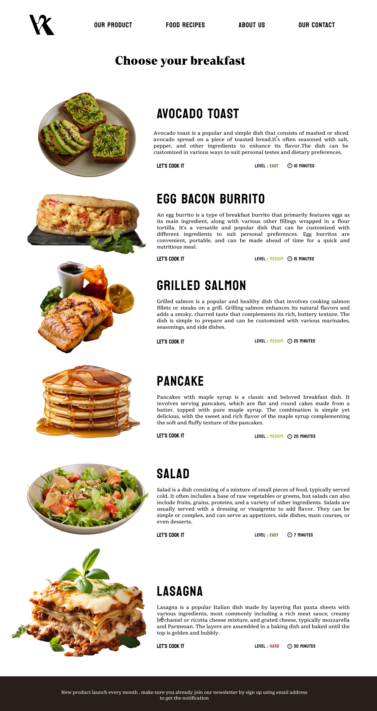
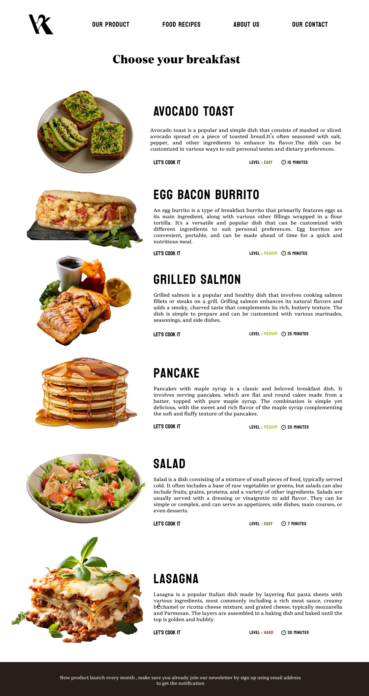

Healthy food company website that sells their breakfast product and provides healthy breakfast recipes
ROLE
Front-End development
RESPONSIBILITIES
UI/UX Prototype, Front-End
PROJECT TYPE
Individual
HTML
CSS
JavaScript
VKellog’s sits at the intersection of taste and well-being, offering more than just breakfast it’s about starting the day with balance. With products crafted for everyday routines and recipes designed to inspire, it blends convenience with authenticity. Every choice feels like an invitation to enjoy something simple, nourishing, and thoughtfully made.
VKellog’s brings its promise to life through every product on this page. From oatmeals layered with
fruits and spices, to cookies that balance indulgence with nutrition, each item is crafted to fit
seamlessly into daily rituals.
It’s not just food, it’s versatility in a cup, in a bite, in a sip.
Here, convenience meets creativity, inviting everyone to explore flavors that feel familiar yet
refreshingly new.
 

At VKellog’s, breakfast isn’t just the first meal of the day—it’s a canvas of possibilities. From simple to savory,
each recipe is designed to spark creativity in the kitchen while keeping wellness at the core.
Whether it’s an
energizing toast, a hearty burrito, or a comforting lasagna, these plates invite you to start your
morning with flavor, balance, and ease.